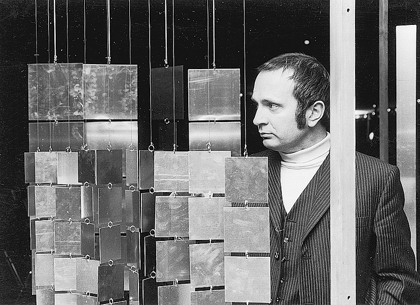
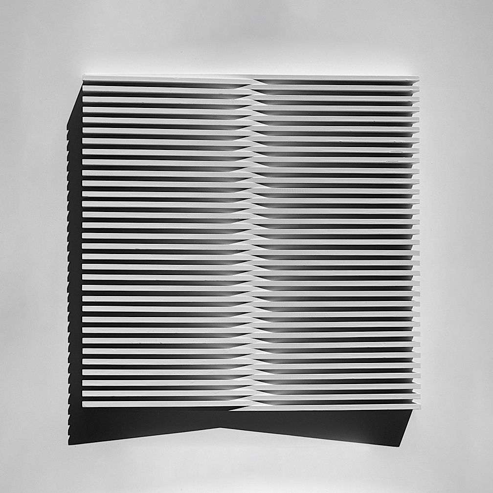

jo enzweiler


kunst
Jo Enzweiler wurde 1934 in Merzig-Büdingen geboren. Er studierte Kunst und Kunsterziehung in München,
Toulon und Saarbrücken. Obwohl er in unterschiedlichen Medien arbeitet bezeichnet er sich selbst als
Maler. Als Künstler, Kunstlehrer und Kunstvermittler ist es ihm wichtig, die Kunst in die Gesellschaft
zu tragen. In seinem Verständnis findet Kunst auch in der Auseinandersetzung über sie statt.
Jo Enzweiler lebt und arbeitet in Wallerfangen/Saar. Sein Schaffen widmet er der konkreten Kunst.
Was das bedeutet und wo sie herkommt erfährst Du in dieser App.

Jo Enzweiler, Hommage à El Lissitzky, 1978, St. Johanner Markt, Saarbrücken (Foto: Monika Zorn)
konkret
Konkrete Kunst ist eine Kunstrichtung, bei der es um sinnliche Erfahrung geht, also um das Sehen, Hören, Riechen,
Spüren oder Tasten. Was nehmen wir wahr? Wie funktioniert unsere Wahrnehmung und wie beeinflusst sie uns?
Um konkrete Kunstwerke erfassen zu können brauchst Du kein Vorwissen. Sie sind gegenstandslos, weil sie keinen
Gegenstand zeigen. Die Farben, Formen, Linien und Materialien, aus denen sie sich zusammensetzen, stehen für
sich selbst.
Der russische Künstler Kasimir Malewitsch (1878–1935) malt 1915 das erste gegenstandslose Bild überhaupt: ein schwarzes Quadrat auf weißem Hintergrund. »Als ich 1913 den verzweifelten Versuch unternahm, die Kunst vom Gewicht der Dinge zu befreien, stellte ich ein Gemälde aus, das nicht mehr war als ein schwarzes Quadrat auf einem weißen Grundfeld […] Es war kein leeres Quadrat, das ich ausstellte, sondern vielmehr die Empfindung der Gegenstandslosigkeit.« [Kasimir Malewitsch] Malewitsch war kein konkreter Künstler, er war Konstruktivist. Das Wort »konstruieren« bedeutet »etwas zusammenfügen« oder »zusammenbauen«. Nicht nur Formen, Farben und Materialien lassen sich zusammensetzen – also konstruieren – sondern auch Ideen und Gedanken.
In der niederländischen Künstlergruppe De Stijl finden sich 1917 Künstler zusammen, die mit einfachen Grundformen und -farben Bilder und Objekte konstruieren. Unter ihnen Theo van Doesburg, der erstmals den Begriff Konkrete Kunst verwendet. Das Wort 'konkret' bedeutet anschaulich, fassbar, wirklich. In Deutschland entwickelt in den 1920er Jahren das Bauhaus diese Ideen weiter.
Die konkrete Kunst steht gerade in ihren Anfängen für den Aufbruch in ein modernes, technisches Zeitalter. Konkrete Künstler arbeiten unter anderem mit Licht, Ton, Fotografie, Video, Computern. Heute wie damals geht es um Strukturen, Systeme, Rhythmus, Information, Programmierung, Vernetzung, Wahrnehmung, aber auch um gesellschaftliche Zusammenhänge, Utopien und Veränderung.
Der russische Künstler Kasimir Malewitsch (1878–1935) malt 1915 das erste gegenstandslose Bild überhaupt: ein schwarzes Quadrat auf weißem Hintergrund. »Als ich 1913 den verzweifelten Versuch unternahm, die Kunst vom Gewicht der Dinge zu befreien, stellte ich ein Gemälde aus, das nicht mehr war als ein schwarzes Quadrat auf einem weißen Grundfeld […] Es war kein leeres Quadrat, das ich ausstellte, sondern vielmehr die Empfindung der Gegenstandslosigkeit.« [Kasimir Malewitsch] Malewitsch war kein konkreter Künstler, er war Konstruktivist. Das Wort »konstruieren« bedeutet »etwas zusammenfügen« oder »zusammenbauen«. Nicht nur Formen, Farben und Materialien lassen sich zusammensetzen – also konstruieren – sondern auch Ideen und Gedanken.
In der niederländischen Künstlergruppe De Stijl finden sich 1917 Künstler zusammen, die mit einfachen Grundformen und -farben Bilder und Objekte konstruieren. Unter ihnen Theo van Doesburg, der erstmals den Begriff Konkrete Kunst verwendet. Das Wort 'konkret' bedeutet anschaulich, fassbar, wirklich. In Deutschland entwickelt in den 1920er Jahren das Bauhaus diese Ideen weiter.
Die konkrete Kunst steht gerade in ihren Anfängen für den Aufbruch in ein modernes, technisches Zeitalter. Konkrete Künstler arbeiten unter anderem mit Licht, Ton, Fotografie, Video, Computern. Heute wie damals geht es um Strukturen, Systeme, Rhythmus, Information, Programmierung, Vernetzung, Wahrnehmung, aber auch um gesellschaftliche Zusammenhänge, Utopien und Veränderung.

Portal 1973, Holz, kath. Bildungszentrum Maria Rosenberg, Waldfischbach-Burgalben, Entwurfsrelief, 90 x 90 cm (Foto: Jo Enzweiler)